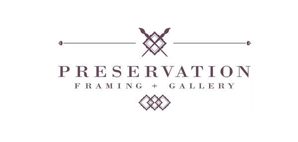
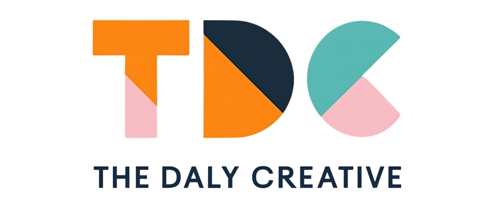

Drumplings
Melbourne fusion restaurant
Website redesign focused on user flow, mobile responsiveness, SEO and a clean, modern hospitality brand.
Web designSEO
Training & assessment · Learning technology · Web development
I train people, and I build the digital tools they learn from.
Trainer and assessor (TAE40122) currently teaching at a Perth RTO, with fifteen years of coaching, facilitation and frontline leadership behind me. I've administered an enterprise LMS across a WA government department and I design and build interactive learning resources myself, so I can take training from the first draft to the classroom without handing it off.
Most trainers deliver content someone else made. I design and build interactive learning resources, instructional slideshows and web-based tools, then teach from them. At Equinim College I deliver back-end web development, AI and machine learning, and blockchain units to diploma cohorts of 12–25 students, working within the RTO Standards. Many of my students are international, or are managing work and family alongside study.
Before that I spent several years in WA and Victorian government roles. At the Department of Transport I administered the ELMO learning management system department-wide and cut the online training update cycle by about 20%. At COVID-19 Quarantine Victoria I rolled out policy, infection control and de-escalation training to more than 60 support officers. Earlier, I coached new cabin crew at Jetstar and trained presenters at RTRfm community radio.
I also run The Daly Creative, a small studio doing web development, branding and practical AI automation for local businesses. The technical skills aren't a separate career. They're what let me build better training.
Equinim College of Technology (RTO 45758) · Perth, WA
The Daly Creative · Perth, WA
Department of Transport, Western Australia · Perth, WA
Supreme Court of Western Australia (Department of Justice) · Perth, WA
District Court of Western Australia (Department of Justice) · Perth, WA
Australian Electoral Commission · Melbourne, VIC
COVID-19 Quarantine Victoria (Department of Justice) · Melbourne, VIC
White Pages Australia (Sensis)
Medibank Private · Docklands, VIC
Jetstar Airways · Melbourne, VIC
RTRfm 92.1 Community Radio · Mount Lawley, WA
SGIO Insurance (IAG) · Subiaco, WA
Interactive Three.js map helping new Equinim students find their way around campus, backed by rendered floor plans and room signage.
Browser-based teaching decks I build and deliver from for diploma units in web development, AI/ML and blockchain.
A custom field guide produced for Equinim students attending the Black Swan Summit 2026 at UWA.
Redesigned how online training content is updated at the Department of Transport, cutting cycle time by about 20%.
Melbourne fusion restaurant
Website redesign focused on user flow, mobile responsiveness, SEO and a clean, modern hospitality brand.

Boutique art framing, Perth
Brand refresh and website build: information architecture, typography, colour palette and service page structure.
In-home care provider
Brand identity, colour system, web build and client onboarding pathways for a care and wellbeing organisation.

My studio & portfolio
Home for my web, branding and AI automation work, built and maintained myself.
Current National Police Check · Working With Children Check (NSW) · Responsible Service of Alcohol (VIC) · Infection control, PPE, emergency response and de-escalation training
Referees available on request.